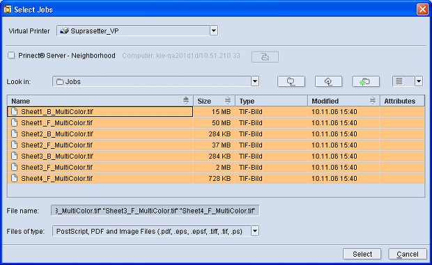

Proceed as follows if there are suitable Tiff-B files in the system environment of the Prinect Shooter PC and you wish to output them with Prinect Shooter:
1. Click "New" in the job list. A file selection dialog opens:

2. Select the folder with the Tiff-B data you wish to process. It can also be an enabled folder on another computer in the network.
3. Select the TIFF-B file(s) you want and click "Select". The selected Tiff-B files are copied as new component jobs to the job list. The new components jobs are processed immediately or they must be started by selecting them in the job list and clicking the Start button, depending on whether the "Pause job before reprint" parameter is set or not (see Reprint).
Copyright © 2013 Heidelberger Druckmaschinen AG